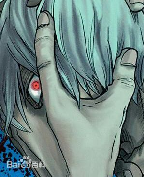
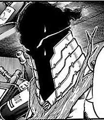

角色介绍（反派角色）
-

死柄木吊(しがらき とむら)
本名：志村转弧
身体被十四只手握住、看上去病怏怏的男子，目前作为敌联盟的首脑，率领部下对雄英高中发起的突袭。 -

黑雾(くろぎり)
穿着高领套装、全身被黑色烟雾覆盖的男子，平时说话诚恳，但一旦激动起来会变得口不择言。在雄英高中突袭战中负责将大量组织成员送入学校内部的工作。
本名：志村转弧
身体被十四只手握住、看上去病怏怏的男子，目前作为敌联盟的首脑，率领部下对雄英高中发起的突袭。
穿着高领套装、全身被黑色烟雾覆盖的男子，平时说话诚恳，但一旦激动起来会变得口不择言。在雄英高中突袭战中负责将大量组织成员送入学校内部的工作。